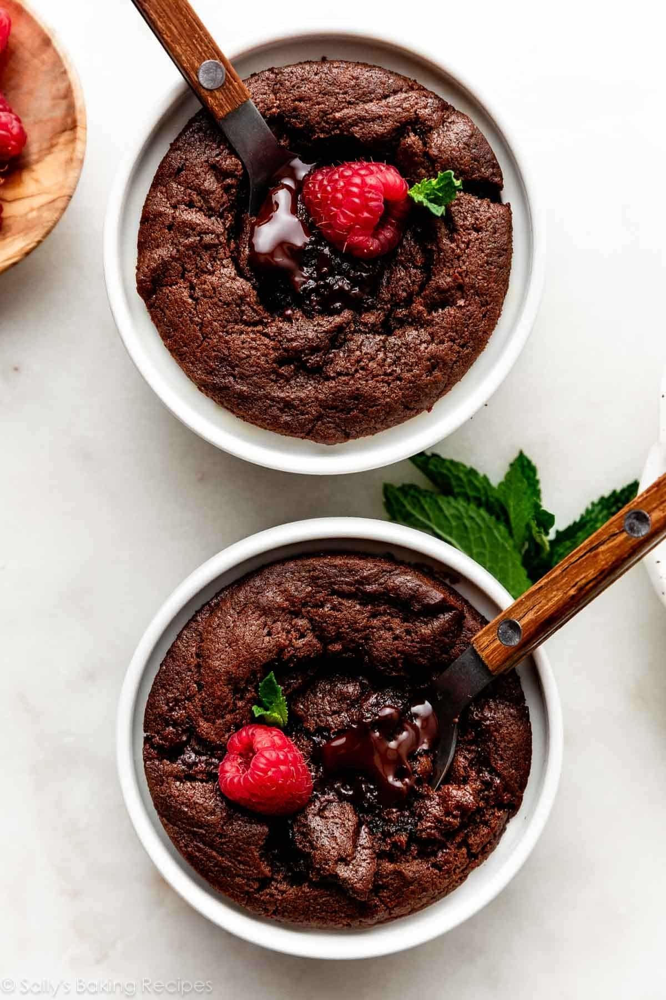

Chocolate Fudge Cake

Description
These individually portioned chocolate fudge cakes are intensely rich with a molten chocolate center, perfect for date night or a small-batch treat for two. Made in 30 minutes using ramekins, they combine the fudginess of ganache with cake-like edges, featuring semi-sweet chocolate melted with heavy cream. Serve warm, optionally topped with ice cream, whipped cream, or fresh berries for an indulgent dessert.
Ingredients
- 3 ounces (85g) semi-sweet chocolate (¾ of a standard baking chocolate bar)
- ¼ cup (60ml) heavy cream
- 3 Tablespoons (36g) packed light brown sugar
- 2 Tablespoons (30ml) vegetable oil
- 2 Tablespoons (30ml) beaten egg (crack 1 egg, beat it, and use 2 Tbsp)
- ½ teaspoon pure vanilla extract
- 6 Tablespoons (46g) all-purpose flour (spooned & leveled)
- ¼ teaspoon baking powder
- ⅛ teaspoon baking soda
Steps
- Lightly grease two 6-ounce ramekins with butter or nonstick spray. Place on a baking sheet. Preheat oven to 350°F (177°C).
- Coarsely chop 2 ounces (57g) of semi-sweet chocolate; reserve 1 ounce (28g) unchopped. Melt chopped chocolate with heavy cream in microwave (20-second increments, stirring) or double boiler until smooth. Whisk in brown sugar until dissolved.
- Whisk in oil, 2 Tablespoons beaten egg, and vanilla extract.
- In a small bowl, whisk flour, baking powder, and baking soda. Fold dry ingredients into wet until no lumps remain. Divide batter evenly into ramekins (about ¾ full).
- Cut remaining 1 ounce chocolate in half; press one 0.5oz piece into center of each batter-filled ramekin, submerging fully with a spoon.
- Bake 15–17 minutes on lined baking sheet, rotating halfway. Centers remain gooey with melted chocolate. Serve immediately warm.